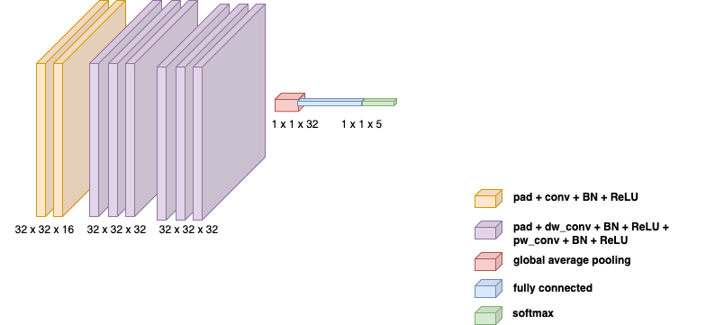
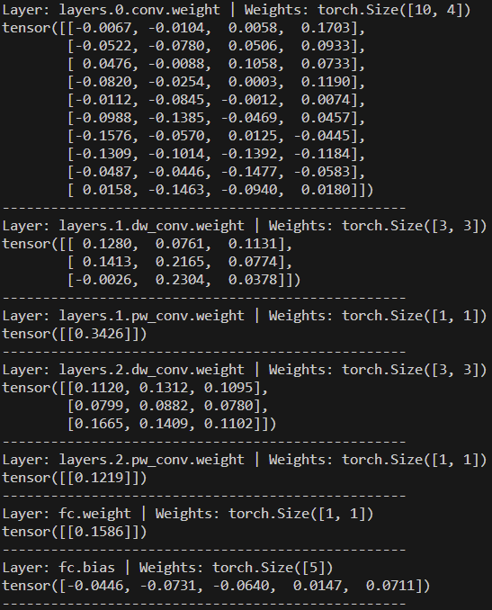
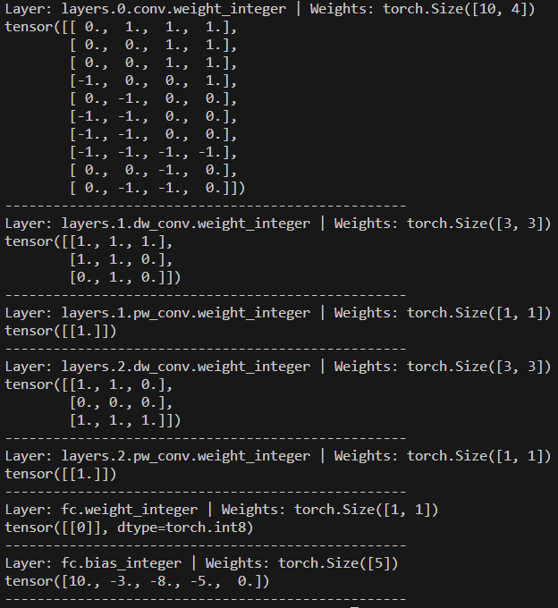
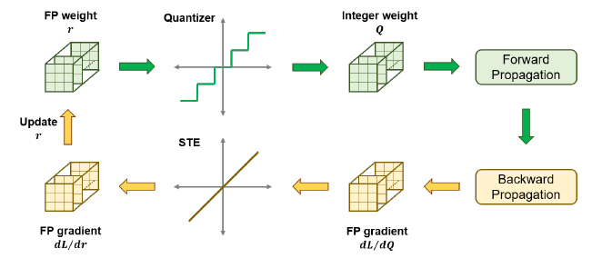
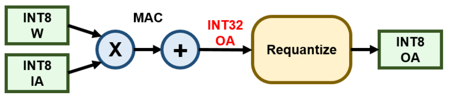

Ternarizing CNNs
Overview
We built a compact convolutional neural network to classify human activities from radar
spectrograms, then compressed it for integer-only inference. The model recognizes
jogging, jumping, sit-ups, waving, and other activity from single-channel
64 × 64 inputs.
The compression pipeline combines ternary weights, quantized activations and biases, pruning, batch-normalization folding, and quantization-aware training. The goal was to preserve the full-precision model's accuracy while reducing its numerical precision and reliance on floating-point operations.

Why It Matters
A full-precision model stores each weight with 32 bits. Restricting a weight to
{−1, 0, +1} allows it to be encoded with 2 bits, a 16× reduction in raw
weight storage before accounting for biases, scales, and other model data. The challenge
is retaining accuracy after introducing this low-precision constraint
[1].
The compressed model reached 98.91% mean accuracy, compared with 99.42% for the FP32 baseline.
How It Works
-
Radar representation. Each sample is a
64 × 64 × 1spectrogram from a private radar dataset with five activity classes. - Compact CNN. One 2D convolution is followed by two depthwise separable convolution blocks, global average pooling, and a five-class output layer. The network contains 3,029 parameters.
-
Quantization-aware training. A threshold maps weights to
{−1, 0, +1}, while fake quantization exposes the model to low-precision arithmetic during training. - Integer inference. Activations use 8-bit precision and biases use 23-bit precision. We pruned the model to approximately 45% sparsity, folded batch normalization into the convolution parameters, and used dyadic scale factors for multiplication-and-bit-shift requantization.

Weight Ternarization
For each layer, a threshold determines whether a full-precision weight maps to
−1, 0, or +1. A non-negative scale factor
α preserves the magnitude of the original weight distribution while the
ternary values provide a compact representation. The extracts below show corresponding
floating-point parameters and their ternarized weights and quantized biases.


Quantization-Aware Training
We used uniform affine quantization to approximate a real value r as
q = round(r / scale) + zero_point. During training, fake-quantization
modules simulate the rounding and clipping used at inference while the trainable
parameters remain in floating point. A straight-through estimator supplies gradients
through the non-differentiable rounding operation
[2], [3].

Integer-Only Inference
After pruning to approximately 45% sparsity, we folded each batch-normalization layer
into the preceding convolution. Convolution, activation, and pooling then operate on
integer values. Dyadic scales of the form s = a / 2ᵇ replace general
division with integer multiplication and bit shifting during requantization
[2], [4].

Evaluation
We evaluated the FP32 and compressed models using the same five cross-validation folds. The compressed model remained within 1.09 percentage points of the baseline on every fold and matched it on fold 5.
| Fold | FP32 accuracy | Compressed accuracy |
|---|---|---|
| 1 | 99.27% | 98.19% |
| 2 | 100.00% | 99.64% |
| 3 | 99.27% | 98.91% |
| 4 | 98.55% | 97.83% |
| 5 | 100.00% | 100.00% |
| Mean | 99.42% | 98.91% |
Takeaway
Ternarization, quantization, and pruning reduced numerical precision while limiting the mean accuracy change to 0.51 percentage points. The available evaluation measures classification accuracy; hardware latency, memory use, and energy consumption were not benchmarked.
References
- F. Li, B. Liu, X. Wang, B. Zhang, and J. Yan, Ternary Weight Networks , 2016.
- B. Jacob, S. Kligys, B. Chen, M. Zhu, M. Tang, A. Howard, H. Adam, and D. Kalenichenko, Quantization and Training of Neural Networks for Efficient Integer-Arithmetic-Only Inference , CVPR 2018.
- Y. Bengio, N. Léonard, and A. Courville, Estimating or Propagating Gradients Through Stochastic Neurons for Conditional Computation , 2013.
- Z. Yao, Z. Dong, Z. Zheng, A. Gholami, J. Yu, E. Tan, L. Wang, Q. Huang, Y. Wang, M. W. Mahoney, and K. Keutzer, HAWQ-V3: Dyadic Neural Network Quantization , ICML 2021.